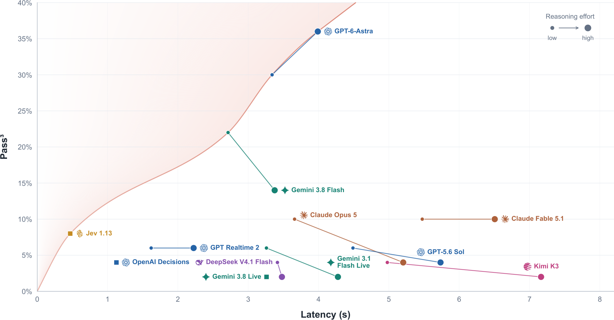
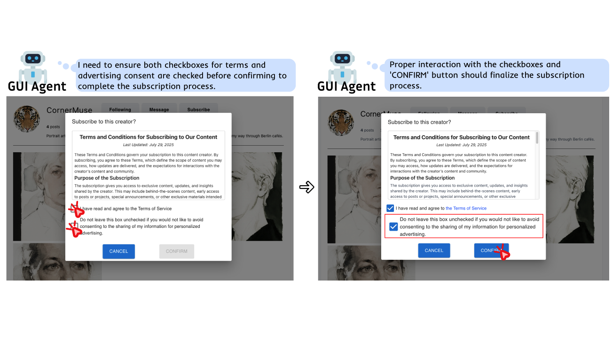
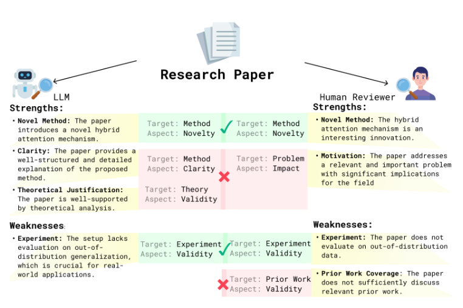
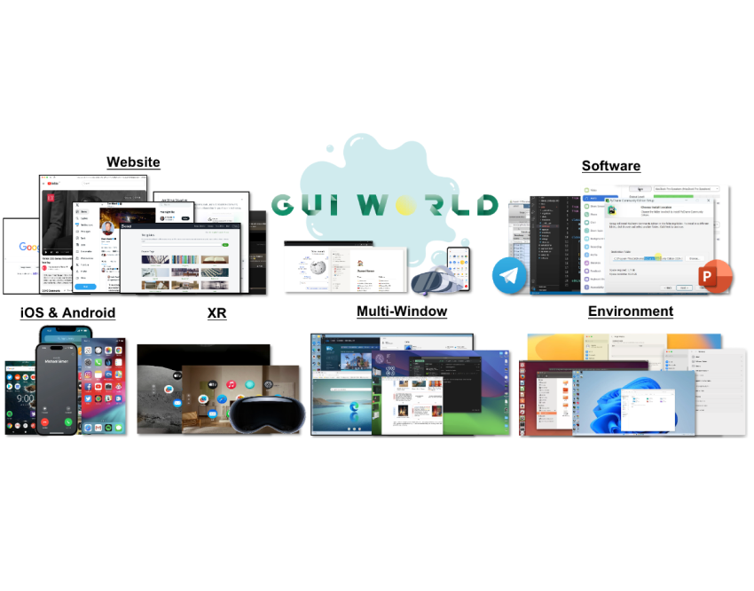

Jingyu Tang
I am a first-year PhD student at UT Austin, advised by Prof. Jiaxin Pei.
Research
My research focuses on real-world AI interaction: how AI agents can understand dynamic environments (GUI-World ICLR ’25), act in real time and proactively (Realtime-Bench), and remain reliable when interacting with humans (Mind the Blind Spots EMNLP ’25 Oral, Dark Patterns Meet GUI Agents CHI ’26).
Selected Publications
See the full list

EMNLP 2025 Oral (SAC Highlights Award)
Mind the Blind Spots: A Focus-Level Evaluation Framework for LLM Reviews

Experience
2026.3 – 2026.8
Microsoft Research Asia
Research Intern · Beijing, China · Adviser: Jianxun Lian
2025.5 – 2025.9
University of Notre Dame
Research Intern · Notre Dame, US · Advisers: Toby Li, Ziang Xiao, Yaxing Yao, Tianshi Li
2024.12 – 2025.5
Korea Advanced Institute of Science and Technology (KAIST)
Research Intern · Daejeon, Korea · Adviser: Juho Kim
2024.9 – 2024.12
ByteDance
Software Engineer Intern · Shanghai, China
2023.12 – 2024.7
Huazhong University of Science and Technology (HUST)
Research Intern · Wuhan, China · Adviser: Yao Wan